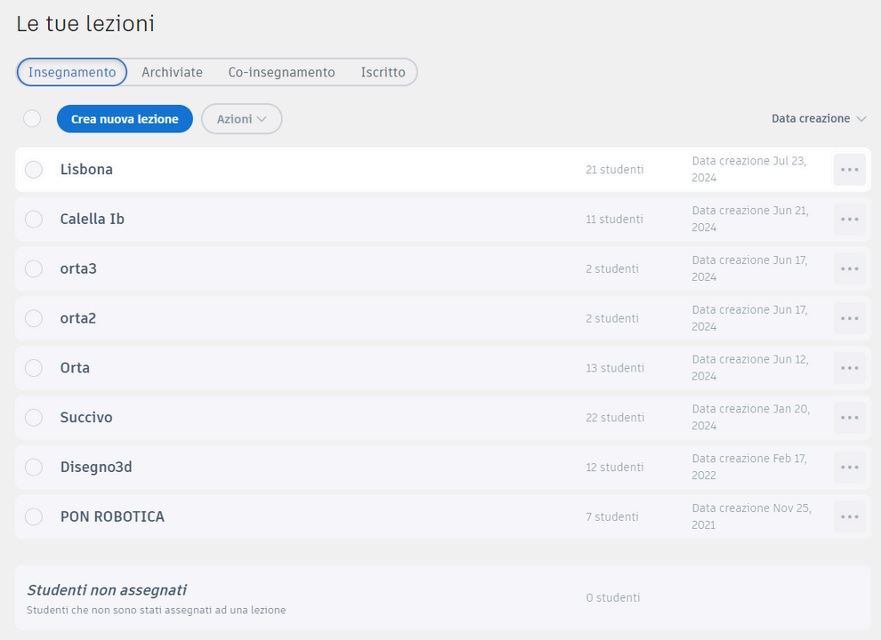
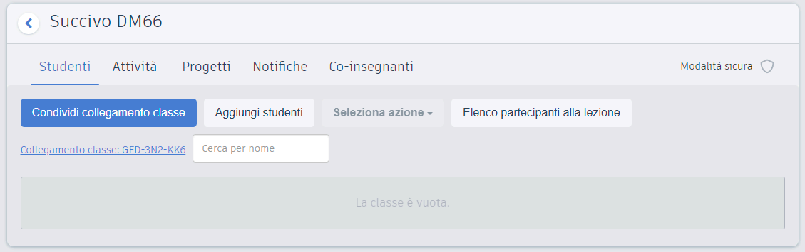

TinkerCAD
in classe
Lezioni, studenti, attività progettate passo-passo, errori comuni e valutazione: come portare la modellazione 3D nella didattica di ogni giorno.
Cosa vedremo
Creare una classe

Gestione della classe
Aggiunta rapida
Inserisci nome e soprannome dello studente; puoi aggiungerne più d'uno in un colpo solo, uno per riga. TinkerCAD genera automaticamente le credenziali di accesso (nickname + password) senza richiedere email personali, riducendo i dati richiesti; la scuola deve comunque verificare informativa, base giuridica, consensi eventualmente necessari e policy interne.
Co-docenti
Le funzioni disponibili per altri docenti e moderatori possono cambiare: verifica nella dashboard corrente ruoli, accessi e possibilità di gestione prima di pianificare la lezione. Utile per team teaching o per la supervisione incrociata tra colleghi di dipartimento.
Stato
La dashboard consente al docente moderatore di gestire la classe e consultare i design disponibili. Prima dell'attività verifica quali dati di stato e comandi sono presenti nella versione corrente.
Stampa le credenziali su bigliettini individuali e prova l'accesso con un account studente di test prima della lezione: cinque minuti di verifica evitano venti minuti di caos in aula al primo collegamento.

Progetto di partenza
Base comune
Il docente prepara un modello iniziale in TinkerCAD — per esempio un solido con il segnaposto "NOMESTUDENTE" — che viene assegnato alla classe. Ogni studente lo copia nel proprio spazio di lavoro e lo modifica liberamente senza alterare l'originale del docente.
Sfide
TinkerCAD offre sfide predefinite che guidano lo studente passo dopo passo con obiettivi chiari, vincoli dimensionali e tempo suggerito. Il docente può distribuire consegne e modelli di partenza con gli strumenti disponibili nella versione corrente o tramite il proprio ambiente didattico.
Monitoraggio
Dalla vista classe il docente consulta i design resi disponibili dagli studenti e può esaminare i progetti; feedback e consegna vanno organizzati con le funzioni effettivamente disponibili o con gli strumenti della scuola. Per la valutazione sommativa si può chiedere l'export in STL o uno screenshot come prova di consegna.
Un'attività passo-passo
Un'attività efficace non nasce dal modello 3D da produrre, ma dal percorso: prima il traguardo, poi consegna, tempi e verifica costruiti attorno a quello.
Attività per ogni livello
Portachiavi con nome — primo approccio
Base piatta più testo in rilievo: insegna a spostare, ridimensionare e raggruppare. Vincoli: lunghezza massima 60 mm e foro da 4 mm per l'anello. Si completa in una lezione e ogni studente porta a casa un oggetto suo.
Targhetta per la porta — base
Testo incassato nella base usando gli oggetti "foro": introduce la differenza tra solido e vuoto. Vincoli: scritta leggibile a due metri, spessore 3 mm. Perfetta per etichettare aule e laboratori della scuola.
Dado personalizzato — intermedio
Sei facce con simboli incassati richiedono rotazioni precise e la vista ortogonale: è l'attività ideale per introdurre lo strumento Allinea. Variante: un dado con emozioni o domande per giochi didattici in altre materie.
Medaglia — avanzato
Più livelli di rilievo, bordo decorato e foro per il nastro: combina tutte le competenze del percorso. Diventa un premio reale da stampare per tornei e gare della classe, chiudendo il cerchio tra modello e oggetto.
Errori comuni in aula
Lo studente modella senza guardare le misure e ottiene un portachiavi da 20 cm. Rimedio: metti i vincoli in millimetri nella consegna e fai verificare con lo strumento righello prima della consegna.
L'oggetto grigio resta appoggiato e il vuoto non si crea mai. Rimedio: mostra alla lavagna il prima e il dopo di Raggruppa una sola volta, per tutta la classe insieme.
Testo o dettagli staccati dalla base, invisibili dall'alto ma persi in stampa. Rimedio: insegna a controllare i contatti dalla vista laterale ortogonale prima di raggruppare.
Modifiche fatte sul progetto originale invece che sulla copia personale. Rimedio: rinominare la copia con il proprio nome è il primo passaggio obbligatorio di ogni attività.
Correggere al posto dello studente è la tentazione più grande: guida con domande — "da quale vista lo vedi meglio?" — invece di prendere il mouse. L'obiettivo è l'autonomia nella correzione, non il modello perfetto.
Badge e valutazione
Badge
I badge di TinkerCAD rendono visibili progressi, cura nel dettaglio, creatività o capacità di collaborazione. Il docente assegna manualmente i badge ai singoli studenti dalla dashboard; possono celebrare un primo design completato, l'uso delle sfide o la qualità della geometria.
Feedback
Un commento efficace è specifico e tecnico: cita la misura errata, suggerisce come allineare gli oggetti, indica la parte con parete troppo sottile per la stampa. Evitare giudizi generici come "bello" o "da rifare": lo studente deve sapere esattamente cosa cambiare e perché.
Portfolio
I progetti finali esportati come STL o screenshot costituiscono prove concrete di competenza digitale e progettuale da inserire nel portfolio dello studente o nella documentazione di fine modulo. Non esiste un voto automatico: la valutazione rimane una decisione del docente.
Il badge non sostituisce la valutazione sommativa: segnala un traguardo specifico o un comportamento positivo da riconoscere pubblicamente all'interno della classe.
Valutare con quattro criteri
Una rubrica breve e osservabile rende la valutazione trasparente: comunicala prima dell'attività, così gli studenti sanno esattamente dove guardare.
Rispetto della consegna
Misure e vincoli richiesti sono rispettati? È il criterio con il peso maggiore e il più oggettivo: basta aprire il righello sul modello, le misure ci sono oppure no.
Correttezza tecnica
Solidi e fori raggruppati, nessun pezzo fluttuante, spessori stampabili. È il criterio che predice se il modello uscirà bene dalla stampante 3D.
Cura e creatività
Scelta dei colori, proporzioni, dettagli personali oltre il minimo richiesto: qui si premia chi ha esplorato, non chi ha replicato l'esempio del docente.
Processo e autonomia
Copia rinominata correttamente, consegna nei tempi, capacità di correggere gli errori segnalati nei commenti senza chiedere aiuto diretto.
Classe pronta.
Classe configurata, attività progettate con obiettivi e vincoli chiari, errori previsti, rubrica alla mano: la modellazione 3D può entrare nella tua didattica da domani.